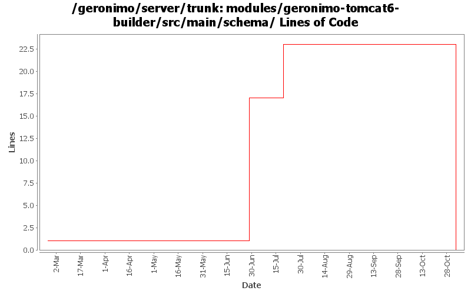

[root]/modules/geronimo-tomcat6-builder/src/main/schema

| Author | Changes | Lines of Code | Lines per Change |
|---|---|---|---|
| Totals | 10 (100.0%) | 31 (100.0%) | 3.1 |
| jgenender | 2 (20.0%) | 16 (51.6%) | 8.0 |
| djencks | 2 (20.0%) | 15 (48.4%) | 7.5 |
| prasad | 2 (20.0%) | 0 (0.0%) | 0.0 |
| ccardona | 4 (40.0%) | 0 (0.0%) | 0.0 |
GERONIMO-3565. Modules distributed amongst framework/modules and plugins
0 lines of code changed in 2 files:
GERONIMO-3308 explicitly allow persistence xml in web plans
14 lines of code changed in 1 file:
GERONIMO-3184 - Add ability for Tomcat integration to implement Catalina Lifecycle Listeners
16 lines of code changed in 2 files:
GERONIMO-2687, mostly schema doc cleanup
1 lines of code changed in 1 file:
GERONIMO-2661 Make geronimo schema files more human readable
- Applied alldoc.patch (Thanks Rakesh..) and made additional modifications:
- Removed the extra Apache license annotation (I think the original Apache license header is enough)
- Arranged the schema formatting
- Changed some annotation/documentation text
0 lines of code changed in 4 files: